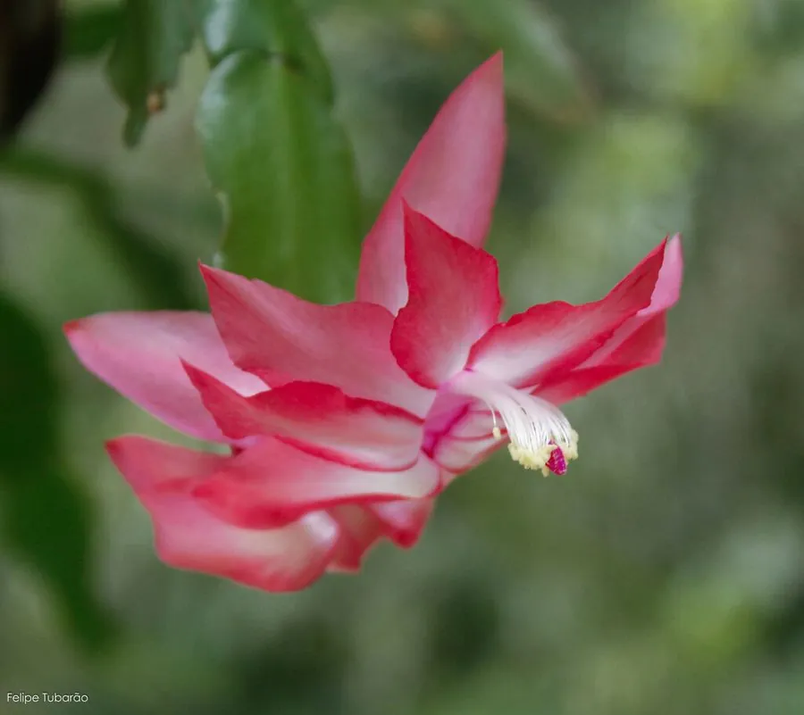

多肉植物 · 植物界
蟹爪兰 Schlumbergera truncata

仙人掌科附生多肉，扁平茎节像蟹爪，冬春开出艳丽花朵，是圣诞、春节档期常见的盆栽花卉，别名圣诞仙人掌。
- 分类
- 门被子植物门纲木兰纲目石竹目科仙人掌科属蟹爪兰属
- 栖息环境
- 巴西东南部热带雨林的树干与岩石上，喜温暖湿润、半阴
- 地理分布
- 原产巴西东南部，世界各地广泛盆栽，中国南北均有栽培
- 保护级别
- 暂无评估
物种志
蟹爪兰为仙人掌科蟹爪兰属附生肉质植物，茎节扁平，长 3–6 厘米，边缘各有 2–4 个尖齿，形似蟹爪，节与节相连成丛。花朵着生于茎节顶端，两侧对称，有紫红、粉、白、橙等色，花期 10–12 月，在温室栽培下可延至翌年 2 月；果实为肉质浆果。
蟹爪兰原产巴西东南部的热带雨林，附生于树干或岩石表面，喜温暖湿润、半阴通风的环境，忌强光暴晒和积水。它是短日照植物，秋末日照缩短后形成花芽，栽培中常通过遮光控制花期，使其在圣诞、元旦和春节期间开花。茎节可扦插繁殖，也可嫁接在仙人掌上养成垂枝大株；浇水过多、花期频繁搬动都容易导致落蕾，需要相对稳定的环境。
形态与习性
- 株高盆栽高约 20–30 厘米，枝条可垂挂 50 厘米以上
- 花期10–12 月，温室栽培可延至翌年 2 月
- 果期花后结肉质浆果
- 光照喜半阴散射光，忌夏季强光
- 水分喜湿润，忌积水，花前适当控水
- 土壤疏松透气、排水良好的腐殖质土
- 繁殖茎节扦插或嫁接
趣味知识
- 蟹爪兰的“叶子”其实是扁平的变态茎，边缘的尖齿形似蟹爪，因此得名。
- 它是短日照植物，秋季每天光照少于 10 小时才容易形成花蕾。
- 蟹爪兰常被嫁接在量天尺或仙人掌上，养成垂枝大株。
- 花期搬动花盆或浇水过多容易落蕾，开花时宜放在稳定环境中。